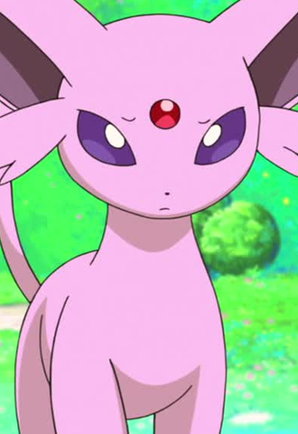
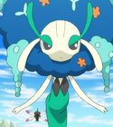

|
Absol |
- Pokemon Advanced Generations
- Pokemon Movie 6: Jirachi Wish Maker
|
Absol is a Pokemon that was introducted in 3rd Generation. This Pokemon can sense and predict when a disaster will happen. Absol tries to warn people about the disaster, but people blamed Absol for the disaster. |
 |
Bulbasaur |
- Pokemon
- Pokemon Movie 1: The First Movie
- Pokemon: Pikachu's Summer Vacation
- Pokemon Movie 2: The Power of One
- Pokemon: Pikachu's Rescue Adventure
- Pokemon: Mewtwo Returns
- Pokemom Movie 3: Spell of the Unknown
- Pokemon Chronicles
- Pokemon: Pikachu and Pichu
- Pokemon: Pikachu's Winter Vacation 2000
- Pokemon: Pikachu's Pikaboo
- Pokemon: Pikachu's Winter Vacation 2001
- Pokemon Advanced Generations
|
Bulbasaur is a Pokemon from the Kanto region. Bulbasaur is a starter Pokemon that a trainer can choose in Kanto. Bulbasaur are loyal to their trainers. It uses its vines to pick up young Pokemon. Megumi Hayasibara voices Ash's Bulbasaur. |
 |
Chimchar |
- Pokemon Diamond and Pearl
- Pokemon Movie 10: The Rise of Darkrai
- Pokemon Movie 11: Giratina and The Sky Warrior
|
Chimchar is a Pokemon from the Sinnoh region. Chimchar is the fire starter of the Sinnoh region. Being very agile, it is able to climb the rocky ledges of tall mountain. Megumi Hayashibara voiced Ash's/Paul's and Alice's Chimchars. |
| |
Dratini |
|
Dratini is a Pokemon from the Kanto region. It hides behind a large waterfall. Although this Pokemon was originally thought to be nothing more than a myth, it been found in colonies living underwater. Megumi Hayashibara voiced Clair's Dratini. |
 |
Eevee |
- Pokemon Advanced Generations
|
Eevee is a Pokemon from Kanto region. Eevee is a quadruped creature with primarily brown fur. Eevee has an irregularly shaped genetic structure that allows it to adapt to many different kinds of environments. Megumi Hayasibara voiced May's Eevee. |
|  |
Espeon |
- Pokemon Advanced Generation
|
Espeon is a Pokemon from Johto region. Espeon is one of the Eevee evolve forms. The gem on Espeon's head boosts it's psychic powers to protects it's trainers. Megumi Hayasibara voices Anabel's Espeon. |
 |
Fennekin |
- Pokemon XY
- Pokemon Movie 17: Diancie and the Cocoon of Destruction
|
Fennekin is a Pokemon from the Kalos region. Fennekin is the fire starters in the Kalos region. Fennekin chews on twigs instead of eating snacks. Megumi Hayashibara voiced Serena's Fennekin. |
|  |
Florges |
|
Florges is a Pokemon on from the Kalos region. Florges is the evolved form of Flabebe. Nobles would often ask Florges to create beautiful gardens for their castles. |
 |
Gardevoir |
- Pokemon Diamond and Pearl
- Pokemon Black and White: Adventure in Unova
|
Gardevoir is a Pokemon from the Hoenn region. Gardevoir is the final form of Ralts and can mega evolve. It is able to create small black holes. Megumi Hayashibara voiced Melodi's Gardevoir. |
 |
Glaceon |
- Pokemon Diamond and Pearl
|
Glaceon is a Pokemon from the Sinnoh region. Glaceon is one of the final forms of Eevee. This Pokemon is able to create small ice crystals around it by controlling its body temperature. Megumi Hayashibara voices May's Glaceon. |
 |
Jolteon |
- Pokemon: Eevees and Friends
|
Jolteon is a Pokemon from the Kanto region. Jolteon is one of the Eevee forms. Jolteon's fur amplifies the electrical charges produced by its cells. It can store and generate negative ions in it fur. |
 |
Phanpy |
- Pokemon
- Pokemon: Camp Pikachu
- Pokemon Advanced Generations
|
Phanpy is a Pokemon from the Johto region. It displays ownership of this area by marking it with its trunk. Phanpy uses its trunk to shower in the river. Megumi Hayashibara voiced Ash's Phanpy. |
 |
Pidgeot |
|
Pidgeot is a Pokemon from the Kanto region. It the final form of Pidgey and can mega evolve. This Pokemon is capable of flying faster than the speed of sound. Megumi Hayashibara voiced Ash's and Falkner's Pidgeots. |
| |
Pidgeotto |
- Pokemon
- Pokemon Black and White: Adventure in Unova
|
Pidgeotto is a Pokemon from the Kanto region. It the evolved form of Pidgey. It has amazing vision, which helps with finding prey. Megumi Hayashibara voiced Ash's Pidgeotto. |
 |
Pikachu |
- Pokemon Movie: The First Movie
- Pokemon: Mewtwo Returns
|
Pikachu is the main Pokemon in all of Pokemon. Pikachu is from the Kanto region and the evolved form of Pichu. Pikachu can recharge each other with their build up energy. Megumi Hayasibara voiced Mewtwo's Clone Pikachu. |
 |
Roselia |
- Pokemon Advanced Generations
|
Roselia is a Pokemon from the Hoenn region. It the evolved form of Budew. Roselia's aroma brings serenity, but the thorns on its head contains a vicious poison. Megumi Hayashibara voiced Victoria's Roselia. |
| |
Skitty |
- Pokemon Advanced Generations
- Pokemon Movie 7: Destiny Deoxys
|
Skitty is a Pokemon from the Hoenn region. It i known to chase its own tail and becomes dizzy from it. It is very popular due to its adorable looks and behavior. Megumi Hayashibara voiced May's Skitty. |
 |
Snivy |
- Pokemon Black and White
- Pokemon Movie 15: Kyurem vs. The Sword of Justice
- Pokemon Black and White: Rival Destinies
- Pokemon Black and White: Adventure in Unova
- Pokemon Black and White: Decolora Adventure
|
Snivy is a Pokemon from the Unova region. Snivy is the grass starter of the Unova region. The tail will begin to droop when Snivy loses energy. Megumi Hayashibara voiced Ash's Snivy. |
 |
Squirtle |
|
Squirtle is a Pokemon from the Kanto region. Squirtle is the water type starter that a trainer can choose in the Kanto region. It can spray foamy water from its mouth with great accuracy. Squirtle's shell is powerful tool for its protection. Megumi Hayasibara Voiced Tierno's Squirtle. |


.png)